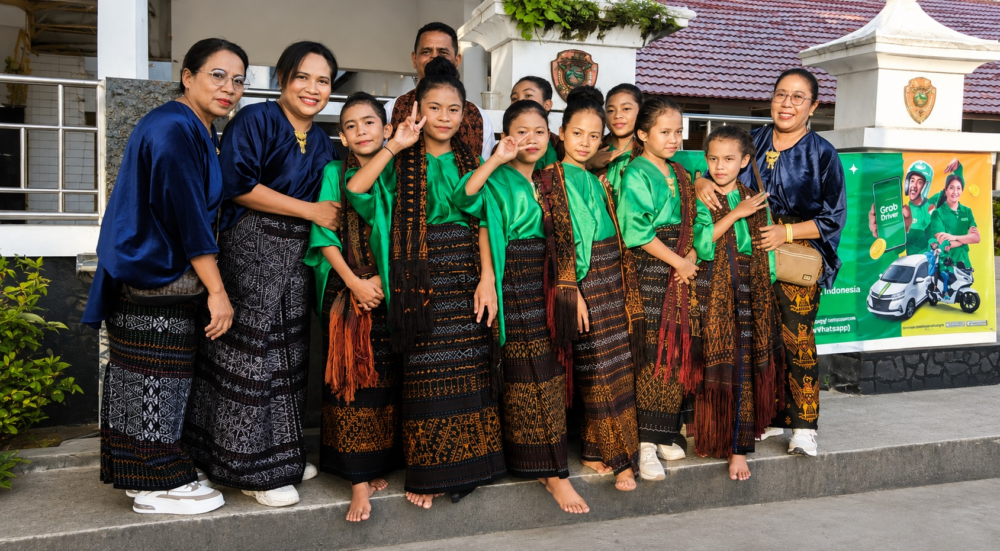

Koleksi Panen Tenun 2026
Marketplace yang menghubungkan pengrajin sarung & kain ikat dari Ende, Lio, dan seluruh Flores langsung ke rumah Anda — setiap helai ditenun tangan, setiap motif menyimpan cerita.
120+
Pengrajin Mitra
350+
Motif Tradisional
4.9/5
Rating Pembeli
Dari sarung adat hingga kemeja tenun kasual
Kurasi terbaik minggu ini dari pengrajin mitra
Motif & teknik diverifikasi bersama tetua adat Ende–Lio.
Nila (indigo) dan akar mengkudu, ramah lingkungan.
Kemasan kain aman & elegan via JNE, J&T, Pos.
Tukar 7 hari bila tidak sesuai deskripsi.

Dari Desa ke Pintu Rumah Anda
Di kampung-kampung tenun sekitar Ende, ibu-ibu penerus tradisi Lio menenun selama berminggu-minggu untuk selembar kain. Marketplace ini memastikan karya mereka mendapat harga yang adil — tanpa rantai tengkulak.
"Kainnya halus, motif naga-nya hidup sekali. Terasa ada jiwa di setiap helai."
Rani W. — Jakarta
"Pesan untuk seragam adat keluarga besar. Admin sabar, pengiriman rapi."
Budi T. — Surabaya
"Sebagai perantau Flores, memakai sarung ini seperti pulang kampung."
Dewi M. — Yogyakarta
Dasbor penjual lengkap: kelola produk, pesanan, status pengiriman, dan saldo — dirancang khusus untuk pengrajin & UMKM tenun. (Dasbor aktif pada Tahap 6–8)